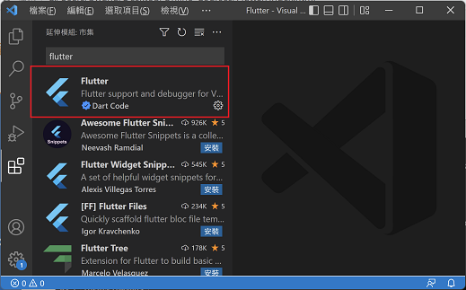
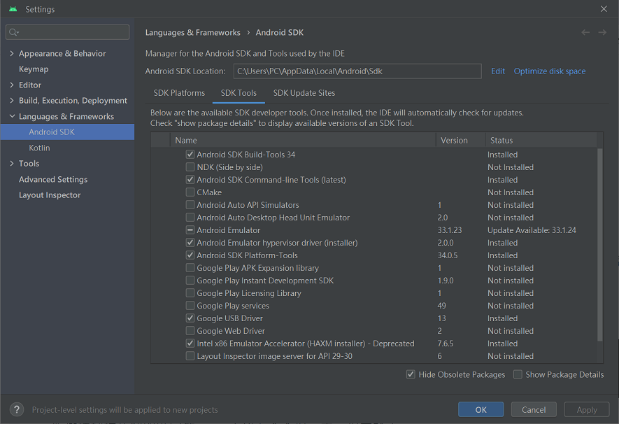
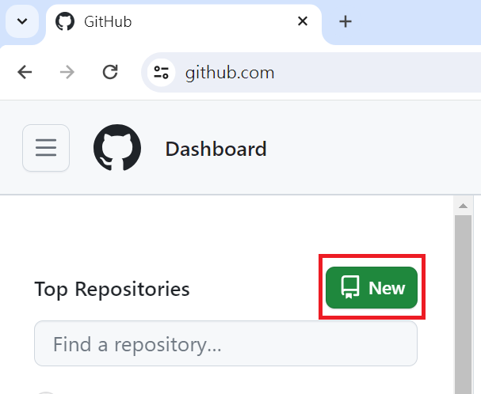
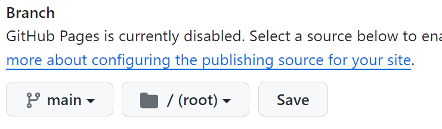
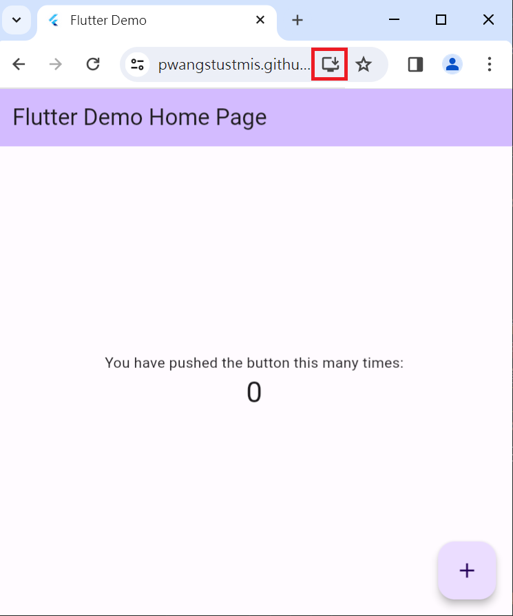

Flutter為一開發套件用於開發混合式行動應用程式(Hybrid APP)。所謂的混合式行動應用程式是讓設計者使用相同的程式開發不同平台應用(Android、iOS、Web APP、Mac OS與Windows)。本課程將利用Flutter來進行跨平台行動應用設計，教授如何開發漸進式網頁應用(Progressive Web Application)，並使用相同專案發布行動應用(Android、iOS)。
軟體安裝步驟分為 工具軟體Git、Flutter SDK、程式編輯軟體Visual Studio Code、Android Studio、Android Studio模擬器、Android版權確認與Flutter doctor，所需作業系統為Windows 10(64位元)、硬碟需1.64GB以上硬碟空間。
-
安裝Git：請下載最新版本Git，安裝過程請持續點選下一步，安裝完畢後，請至 控制台-系統及安全-系統-進階系統設定-環境變數-使用者變數-Path 中新增 Git\bin位置(預設會在 C:\Program Files\Git\bin)。安裝完畢後請開啟命令提示字元視窗並執行下列設定命令：
git config --global user.name "自己英文姓名" git config --global user.email 自己的email帳號
- 安裝Flutter SDK：下載Flutter SDK，網頁點選 Mobile - Install the Flutter SDK - Download and install 下載Flutter SDK zip檔，下載後請解壓縮下載檔案，並將解壓縮後flutter檔案夾放置於使用者自定的檔案夾(如c:\fluttersdk)，請注意：檔案夾名稱不可為中文，名稱不可包含空白或特殊字元，同時勿將flutter檔案夾至於Program Files檔案夾中，因為Program Files檔案夾需要設定權限才能執行，之後將設定檔案夾中 flutter\bin路徑 加入環境變數參數 Path中。
- 程式編輯軟體Visual Studio Code：請下載並安裝Visual Studio Code，安裝後，在延伸模組安裝Flutter模組，模組搜尋文字方塊輸入 chinese 可安裝繁體中文顯示介面。 
- 安裝Android Studio：如果要建立行動專案，則需安裝Android Studio，請下載最新版本並安裝Windows 64-bit Android Studio，安裝完畢後，請至SDK Manager中SDK Tools安裝Android SDK Command-line Tools、Google USB Driver與Intel x86 Emulator Accelerator如下圖，並不定期更新Android SDK。 
- 安裝模擬器：模擬器只需設定一次，除非想要將project執行於不同的模擬器，才需設定多個模擬器。請使用Android Studio中AVD Manager來設定模擬器(選擇 Tools - Android - AVD Manager)，選擇Create Virtual Device並選擇安裝模擬器。
-
Android版權確認與Flutter doctor：請開啟命令提示字元視窗並輸入
flutter doctor --android-licenses
Android版權確認請依照問題回答yes，之後在命令提示字元視窗輸入下方命令確認所有安裝都正確。flutter doctor
漸進式網頁應用(Progressive Web Application, PWA)利用網頁建構的應用程式，可提供與行動應用程式相似的體驗，並提供行動裝置類似的功能如離線運作及傳送通知。Flutter漸進式網頁應用專案與行動專案建立方式相同。建立專案方式如下：
-
開啟命令提示字元視窗並進入專案放置目錄，下列命令所有專案放置目錄為C:\projects，命令 cd 執行切換目錄動作，練習：請先使用檔案總管在 C磁碟機建立 projects目錄，並使用下列命令進入 C:\projects
cd c:\projects
-
輸入下列命令建立漸進式網頁應用專案，org設定用於設定行動應用專案封裝名稱(package name)，練習：請建立名稱為 pwaproject 漸進式網頁應用專案
flutter create --org tw.edu.stust.mis 專案名稱
Flutter漸進式網頁應用專案本地端測試方式如下：
-
開啟 VS Code，選擇檔案-開啟資料夾，並選擇專案資料夾，之後選擇終端機-新增終端機，在終端機視窗輸入下列命令，將專案執行於本地端 Chrome 瀏覽器
flutter run -d chrome
佈署漸進式網頁應用操作包含GitHub網站註冊、建立GitHub儲存庫、設定GitHub Pages、專案發布與上載發佈檔案
- 請進入Github(https://github.com)網站，註冊並選擇GitHub Free服務。
-
登入後在 Dashboard 選擇 New 建立新儲存庫(repository)，輸入新儲存庫名稱(repository name)，勾選 Add a README file後，點選建立儲存庫(create repository)。練習：請建立新儲存庫 pwaproject

-
在儲存庫中點選設定(Settings)-頁面(Pages)，在 Build and Deployment 中Branch選擇 main後，點選旁邊Save按鈕(如下圖)

-
VS code終端機視窗輸入下列命令進行發布漸進式網頁專案，發布操作會在專案目錄產生 build-web 資料夾，專案發布後，請使用 VS Code開啟 build-web 資料夾index.html檔，並將檔案中 <base href="/">刪除後儲存
flutter build web
-
GitHub點選左上方儲存庫名稱跳至儲存庫位置後，點選 Go To file按鈕，在Add file下拉式選單選擇 Upload files，再將要上載檔案拉至GitHub頁面即可上載檔案，檔案上載完畢請點選下方commit changes，等待1至2分鐘，輸入下列命令即可顯示專案，要安裝專案請點選下圖紅色方框按鈕
https://帳號暱稱.github.io/儲存庫名稱

Flutter行動專案建立與建立漸進式網頁應用相同，要將專案發布於Android手機，請先開啟Android手機開發人員選項，並於選項中開啟USB偵錯後，將手機接上電腦後，並在專案發布設備清單中選擇該Android手機並按下執行即可，請注意：在Android Studio SDK Manager一定要安裝Google USB Driver，否則無法發布於手機
Mac系統軟體安裝分為Flutter SDK安裝、安裝Xcode、模擬器安裝、Android版權確認與Flutter doctor，作業系統為Mac OS、硬碟需2.8GB以上硬碟空間。
-
安裝Flutter SDK：
- 下載Flutter iOS。
- 開啟terminal應用程式，並利用mkdir來建立flutter SDK放置的目錄(如mkdir development)。
-
在terminal中輸入flutter SDK檔案夾(如cd development)，接著輸入
cp -r ~/Downloads/flutter . ，它會將整個下載flutter檔案夾複製至flutter SDK檔案夾。之後輸入cd 並按下輸入鍵回到根目錄。 - 在terminal中輸入nano .bash_profile，接下來在.bsah_profile中輸入export PATH="$PATH:/Users/使用者帳號/flutter SDK目錄/flutter/bin"後，按下 Ctrl+O儲存檔案，按下Ctrl+X離開nano編輯器。
- 在terminal中輸入chmod 700 .bash_profile後按下輸入鍵，同時關閉並重新開啟terminal後，輸入echo $PATH來確認flutter/bin路徑在PATH中。
-
安裝Xcode：
- 下載並安裝Xcode，安裝完畢後請在terminal應用程式中輸入下列命令：
- sudo xcode-select --switch /Applications/Xcode.app/Contents/Developer
- sudo xcodebuild -runFirstLaunch
- sudo xcodebuild -license
-
安裝cocoapods用於取的iOS平台Flutter套件，請在terminal應用程式中輸入
sudo gem install cocoapods - 安裝完畢後，請在terminal應用程式中輸入flutter doctor來檢查Flutter的開發設定，同時請不定期在terminal應用程式中輸入flutter upgrade來升級Flutter SDK。